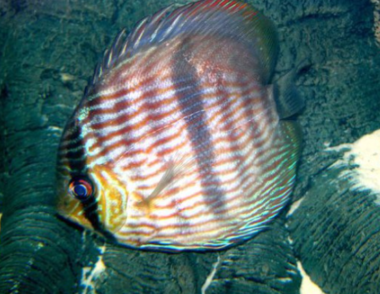

Systématique
- Ordre : Cichliformes
- Famille : Cichlidae
- Genre : Symphysodon
- Espèce : S. discus

Symphysodon discus est l'espèce type du genre, décrite par Johann Jakob Heckel en 1840. Ce cichlidé emblématique de l'Amazonie est biologiquement distinct des autres espèces par sa distribution géographique restreinte et son patron de coloration unique. Il est le représentant le plus "primitif" du genre.
Le corps est parfaitement discoïde, très comprimé latéralement. Sa caractéristique diagnostique majeure est sa cinquième barre verticale sombre, appelée "barre Heckel", qui est nettement plus large, plus intense et plus sombre que les huit autres barres. La coloration de base est souvent brun-jaunâtre avec de fines stries longitudinales bleu ciel ou turquoise qui parcourent la tête et les nageoires.
La taille adulte se situe généralement entre 12 et 15 cm de longueur standard, bien que certains spécimens puissent paraître plus imposants en raison de la hauteur de leur corps. Les nageoires dorsale et anale sont longues et suivent la courbure circulaire du corps, finissant par une forme arrondie.
Symphysodon discus est une espèce extrêmement timide et grégaire. Elle vit en bancs soudés, souvent à l'abri de structures immergées denses (branches tombées, racines de palmiers). Sa survie dépend de la cohésion du groupe pour la détection des prédateurs.
En aquarium, c'est l'espèce de Discus la plus exigeante et la plus sensible au stress. Elle nécessite un environnement calme, peu de passage, et une hiérarchie stable au sein du groupe. Les interactions sociales sont subtiles, basées sur des changements de posture et l'intensité de la coloration des barres verticales, qui servent de véritables indicateurs d'humeur.
Mode : Ovipare, pondeur sur substrat vertical avec production de mucus nutritif parental.
Le cycle de reproduction est intimement lié à la qualité de l'eau. Le couple nettoie méticuleusement un support vertical avant que la femelle ne dépose ses œufs. Une fois les œufs éclos et les alevins parvenus au stade de nage libre, ils se regroupent sur les flancs des parents.
Ces derniers sécrètent alors un mucus cutané riche en anticorps et nutriments dont les jeunes se nourrissent exclusivement durant les premiers jours. Sans ce contact direct avec l'épiderme parental, les alevins ne peuvent survivre. Les deux parents se relaient pour porter les jeunes, effectuant des mouvements brusques pour "transférer" le nuage d'alevins de l'un à l'autre.
Dimorphisme sexuel : Inexistant chez les juvéniles. Chez les adultes, le mâle présente parfois une taille légèrement supérieure et une courbure frontale plus prononcée. Les nageoires peuvent être plus effilées chez le mâle, mais seule l'observation des papilles génitales lors de la ponte permet une identification fiable à 100%.
Espérance de vie : 10 à 15 ans, moyennant une maintenance rigoureuse.
Cette espèce est endémique du Rio Negro, du Rio Abacaxis et du Rio Trombetas. Son habitat typique est constitué d'eaux noires (blackwater), extrêmement acides et dépourvues de minéraux. Ces eaux sont chargées en substances humiques et tanins, leur donnant une couleur thé caractéristique.
La visibilité est faible et la température de l'eau est élevée, oscillant souvent entre 28 et 32°C. Les poissons se tiennent dans les zones d'ombres formées par les racines immergées (igapó), évitant le plein courant. Le substrat est composé de sable très fin et de litière de feuilles.
Répartition

Origine naturelle :
- Amérique du Sud : Brésil uniquement.
- Bassins versants : Rio Negro, Rio Abacaxis, Rio Trombetas et Nhamundá.
- Localisation restreinte aux affluents de la rive nord et sud du cours moyen de l'Amazone.
Les populations sont localisées et ne se mélangent pas naturellement avec les autres espèces de Discus.
Paramètres de maintenance
Température : 28 à 32 °C (températures élevées obligatoires).
pH : 4,0 à 6,0 (eau extrêmement acide).
GH : 0 à 3 °dGH (eau très douce, presque sans sels minéraux).
Courant : Très faible ; nécessite une filtration lente mais surdimensionnée en volume.
Volume conseillé : Minimum 450-500 litres pour un groupe de 6 individus. Bac haut (60cm+) requis.
Régime alimentaire
Régime : Omnivore à tendance carnivore.
En milieu naturel, il se nourrit de périphyton, de larves d'insectes, de petits crustacés et de détritus organiques riches en invertébrés.
En aquarium, l'alimentation doit être variée et riche en protéines : artémias, mysis, vers de vase (qualité irréprochable) et compléments végétaux sous forme de flocons ou granulés spécialisés.